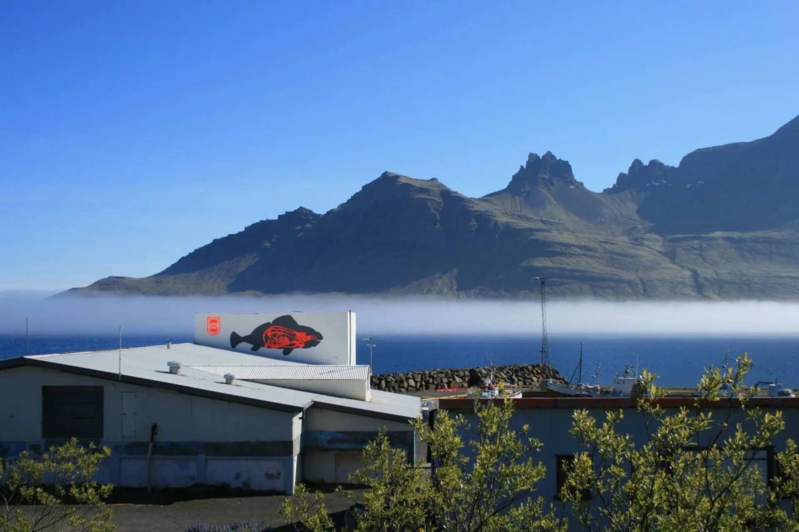
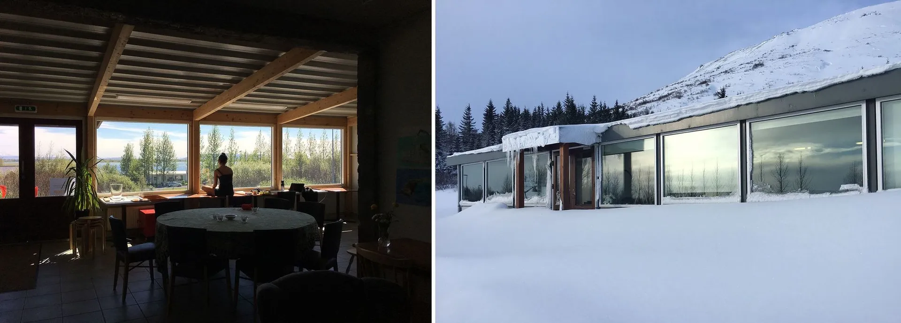

Iceland Artist Residencies
 Fish FactoryFish Factory - Creative Centre is an ongoing collaborative and community project, and our actions and aims are based on sustainable principles and alternative methods. The purpose of the programme is to provide emerging and established artists, creatives, designers, and progressive thinkers a port for free expression and a place to meet with other creative people in a small collaborative community.
 Gullkistan
The Gullkistan residency is located in a quiet village by the Laugarvatn Lake with a view of the Hekla volcano.
The main objective of Gullkistan is to provide a home and workspace for creative people of all professions in an international community. Surrounded by the sublime nature of south Iceland where they can work on their ideas and become a part of Icelandic culture locally and in a wider spectrum as each one of them prefers.
Artists often take part in local community activities and occasionally they finish their stay with a public event sharing their work and experience.
 Solvellir
Solvellir
Nestled amidst serene fjords landscapes and brimming with creative energy, Solvellir Arts Residency offers a haven for artists seeking inspiration and focus.
Explore this charming residence, where history meets modern comfort. From cozy rooms bathed in natural light to spacious communal areas buzzing with creative synergy, every space is thoughtfully designed to nurture your artistic journey, immersed into the wild in the earth of the Westfjords.